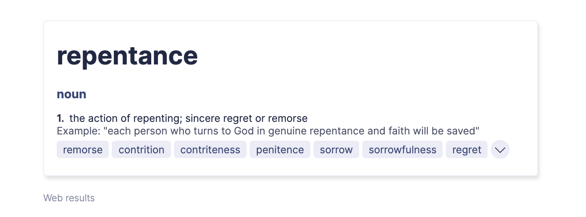

The term repentance comes with all sorts of different ideas. By doing a simple search on the internet we find it summed up in words like “remorse, contrition, contriteness, penitence, sorrow, regret”. Most would agree that this is what is meant when we commonly use the word repentance. What I want to look at in this short article is how the Bible uses what we see translated as the word repentance. Why? Word studies are good because we can focus on how the word was used in Scripture, possibly how it was used during that time period and also because words change their meaning over time. Dictionaries are constantly updating their definitions based on contemporary usage of words as well.
Many Bible scholars however state that the word METANOIA translated originally to Latin as repentance in the Bible is an unfortunate one.
“in no way does this do justice to the Greek.” (Luther’s Works, 48:67–68
Mat 3:1 Now in those days John the Baptist came, preaching in the wilderness of Judea, saying,
Mat 3:2 “Repent, for the kingdom of heaven is at hand.”
Mat 3:3 For this is the one referred to by Isaiah the prophet when he said, “THE VOICE OF ONE CRYING IN THE WILDERNESS, ‘MAKE READY THE WAY OF THE LORD, MAKE HIS PATHS STRAIGHT!’”
Mat 3:4 Now John himself had a garment of camel’s hair and a leather belt around his waist; and his food was locusts and wild honey.
Mat 3:5 Then Jerusalem was going out to him, and all Judea and all the district around the Jordan;
Mat 3:6 and they were being baptized by him in the Jordan River, as they confessed their sins.
Mat 3:7 But when he saw many of the Pharisees and Sadducees coming for baptism, he said to them, “You brood of vipers, who warned you to flee from the wrath to come?
John the Baptist, in preaching to the Judeans, calls them to repentance because the kingdom of heaven is near.